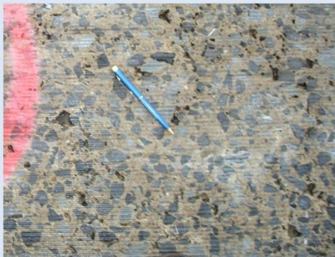
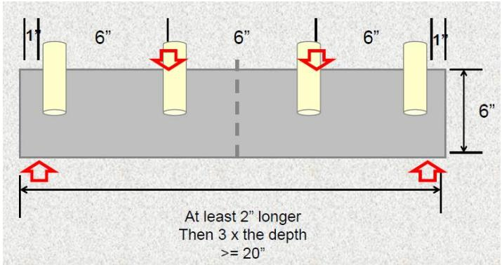
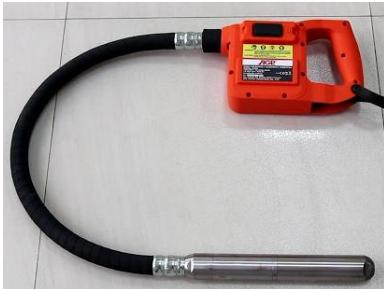
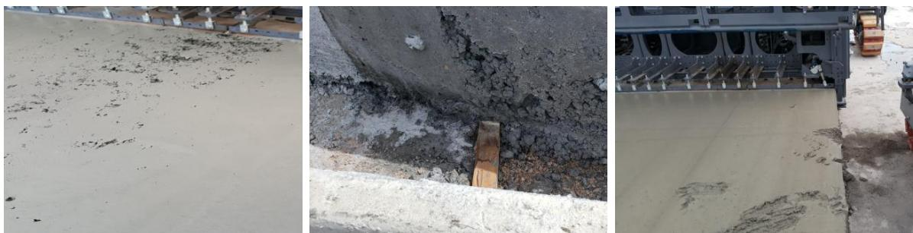

Concrete Vibration Consolidation
Concrete vibration consolidation is a placement‑time technique that counteracts under‑compaction by delivering controlled internal vibration at prescribed frequencies, fluidizing the fresh mix so it fills the intended geometry, eliminates trapped air and voids, and preserves the designed entrained‑air content [1][2][3][8][10][11]. It is the preferred method whenever uniform density and removal of entrapped air are required—being used for reinforced slabs of any thickness, low‑slump airport paving mixes, slip‑form paving, and hand‑screeded pavements up to about 60 ft wide [1][2][3][8]. By operating vibrators within the accepted band (typically 5,000–8,000 VPM, with job‑specific ranges up to 11,000 VPM), maintaining maximum spacing of 30 in., keeping vibrator heads no larger than 1 in. in diameter and extending at least three inches beyond the concrete depth, and ensuring real‑time frequency monitoring and alarm response, the process produces a homogeneous, dense slab that meets strength, durability and smoothness specifications [1][2][4][6][8][9][10]
Sources (11)
Purpose and applicability
Concrete vibration consolidation is applied to counteract the chronic problem of under‑compaction in freshly placed concrete. When concrete is not properly consolidated, trapped air, voids, honeycombing and segregation develop, especially near form edges or in thin overlays where surface vibration alone cannot reach. These deficiencies produce non‑uniform density, uneven surface paste, loss of intended entrained‑air content, reduced abrasion resistance, differential shrinkage cracking, increased permeability, and overall reductions in strength, durability and smoothness of the pavement. By delivering controlled internal vibration at appropriate frequencies, the process fluidizes the mix, forces it into the intended geometry, eliminates voids and air pockets, and preserves the designed air‑entrainment, thereby ensuring a homogeneous, dense slab that meets performance specifications. [1][2][3][8][10][11]
The following figure illustrates the visual consequences of inadequate consolidation by contrasting fresh concrete placement with the resulting honeycombing defects.

Photograph of honeycombing visible after grinding pavement surface. [2]The image displays a close-up view of a concrete surface exhibiting significant honeycombing, characterized by exposed coarse aggregate and voids where the cement paste is missing.
[1] — Ch. 8 (pp. 236–238), Ch. 9 (p. 271); [2] — Ch. 5 (pp. 204–249), App. G (pp. 481–484); [3] — 2 Overview of Concrete Pavemen… (pp. 28–32); [8] — Equipment for Hand/Wet Screedi… (p. 39), Vibratory Truss Screeds (p. 40); [10] — Vibrator Frequency and Height (p. 39); [11] — Ch. 7 (p. 72)
The guides agree that concrete vibration consolidation is the preferred method whenever the placement conditions demand removal of entrapped air and uniform density. It should be used for reinforced slabs of any thickness, for low‑slump airport paving mixes, and during slip‑form paving where built‑in vibrators are integral to the process. Hand or lightweight truss screeds on flat, crowned or inverted pavements up to about 60 ft wide also rely on vibration to achieve adequate consolidation. The guides advise alternative techniques when vibration cannot be applied effectively: if the concrete slump is one inch or greater, rodding (tamping) may replace vibration; when surface vibration cannot reach near fixed forms, supplemental handheld spud vibrators are recommended before screeding; and whenever a vibrator’s frequency drifts outside the job‑specific range, the equipment is broken, misaligned, or excessively dirty, it must be adjusted, replaced, or another consolidation method employed. Over‑vibration of thin overlays should be avoided by withdrawing the vibrator slowly and limiting insertion time. [1][2][3][8]
[1] — Ch. 8 (pp. 236–238); [2] — App. G (pp. 481–484); [3] — 2 Overview of Concrete Pavemen… (pp. 31–32); [8] — Equipment for Hand/Wet Screedi… (p. 39), Vibratory Truss Screeds (p. 40)
Required inputs
The guides concur that the concrete intended for vibration consolidation must be placed with a uniform slump, whether the mix is air‑entrained or non‑air‑entrained. Air‑entrained mixes are noted to consolidate more quickly under vibration, and appropriate entrained‑air content is required so that vibration in the 5,000–8,000 vpm range can eliminate voids without causing segregation. For low‑slump paving concrete (slump less than 1 in.) internal vibration is mandated; when slump reaches one inch or greater vibration or rodding may still be used provided the mixture retains adequate plasticity. Ambient temperature and humidity are monitored to keep concrete viscosity consistent, and placement must occur on a level, rigid surface that does not transmit external vibrations. [1][2]
[1] — Ch. 8 (p. 236); [2] — Ch. 5 (pp. 242–247), App. G (pp. 481–484)
The vibration‑consolidation system shall be designed to deliver a frequency that fully compacts the concrete while preserving entrained air. Across the guidance documents the accepted operating band for most mixes is “For most mixtures, a frequency from 5,000 to 8,000 vibrations per minute can adequately fluidize and consolidate the concrete without loss of entrained air or segregation of particles”; some projects specify a broader job‑specific range – “Rates of 6,000 to 11,000 vibrations per minute (VPM) are common” – while low‑frequency screed applications use “3,000 to 6,000 vibrations per minute (50 to 100 Hz)”. The frequency must be kept within the prescribed limits throughout placement; real‑time monitoring is required – “Vibrator sensing systems are available to provide a real‑time readout of vibration frequency for all of the vibrators on a slipform paving machine” – and alarm thresholds must trigger when the reading falls outside the band – “These units permit alarm settings that alert the operator of high or low frequencies for all or individual vibrators or total loss of vibration”.
Spacing and positioning are governed by clear tolerances: internal vibrators may not be spaced more than 30 inches apart and the outermost units must remain within 12 inches of the profile‑pan edge – “Any adjustments must meet the spacing requirements (30 in. maximum spacing between individual vibrators and 12 in. maximum from the outermost vibrator to the edge of the profile pan)”. Horizontal alignment must be verified daily – “Check the spacing and alignment of the vibrators (FHWA 1996). This should also be done daily, optimally before paving begins” – and each unit’s sensor checked for frequency, amplitude and control response – “pre‑shift daily checks of paver‑mounted vibrators and their sensors for frequency, amplitude, and the response to controls are vital”.
Dimensional limits require that vibrator heads not exceed one‑quarter of the mold width and that all vibrators be no larger than 1 in (25 mm) in diameter – “A sufficient number of concrete vibrators (1 in. [25 mm] diameter or less) are available on site and in proper working condition” – with a combined shaft‑head length extending at least three inches beyond the concrete depth – “The combined length of the vibrator shaft and vibrating element must be at least 3 inches more than the depth of the mold or the layer being consolidated” – and the tip positioned no closer than two inches above any underlying material – “DOD also limits the vibrator depth to no closer than 2 in. from any underlying material”.
Pre‑construction verification includes a trial‑batch run – “During trial batching, the QC Manager should be involved in decisions on the alignment, spacing, amplitude, and frequency of vibrators” – to calibrate vibration settings for the expected paver speed (minimum 2.5 ft/min, typical 3–7 ft/min or up to 15 ft/min) – “Typical paving speeds range from 3 to 15 fpm” – and to establish coordination between speed and frequency – “Vibrator setting and paver speed should be coordinated during the trial batch process to establish an expected range of variables during production paving”. Daily pre‑shift checks must confirm that each vibrator’s frequency remains within limits – “As a minimum, the frequency of each vibrator should be checked twice per day, prior to the morning shift and about mid‑shift” – using handheld tachometers or vibrating‑reed devices.
Equipment readiness also demands inspection of finishing tools: floats and screeds must be straight, free of defects and capable of producing the specified finish – “All floats and screeds are straight, free of defects, and capable of producing the desired finish” – with straightedges up to 20 ft long and cross‑sectional dimensions of 1–2 in wide by 4–6 in deep – “The lengths of these straightedges vary up to 20 ft, and the cross‑sectional dimensions are generally 1 to 2 in. wide by 4 to 6 in. deep” – and dimensional tolerance on the finished surface shall not exceed 1/8 in for molds 6 in or larger – “The maximum variation from the mold’s nominal cross section should be 1⁄8 in. or less for molds with a depth or breadth of 6 in. or more”.
Operational guidelines require that any change in paver speed be manually synchronized with a proportional adjustment of vibration frequency – “The operator must make these adjustments manually” – and that units drifting outside the band be stopped and replaced – “Alarm response corrections are currently accomplished manually (optimal results are typically between 5,000 and 8,000 vpm, but this depends on the mixture workability and other factors)”. Continuous monitoring devices are encouraged – “The use of a vibrator monitor is highly recommended to accurately monitor and control vibrator frequencies” – and adjustments must be made one at a time with daily profile data analysis – “Each adjustment should be made independently, and profile data should then be analyzed daily to evaluate the impact of the adjustments”. The vibration must provide full consolidation without segregation or loss of entrained air – “They should be operated at a frequency (vpm) that provides full consolidation without inducing segregation or reducing the entrained air content of the mixture” – while maintaining constant energy across the slab – “Keeping the vibrational energy constant across the slab by monitoring individual vibrator operation and limiting variations in the load/concrete head heights is important” – and proper mounting with dampening to limit transmission of engine vibration – “Proper mounting (and dampening) of this vibrational energy should limit this potential”. [1][2][3][4][6][8][9][10]
[1] — Ch. 8 (pp. 237–238); [2] — Ch. 5 (pp. 204–249), App. G (pp. 481–484); [3] — 2 Overview of Concrete Pavemen… (pp. 28–32); [4] — Placing and Finishing Equipment (p. 33); [6] — Ch. 5 (p. 120); [8] — Equipment for Hand/Wet Screedi… (p. 39), Vibratory Truss Screeds (p. 40); [9] — Ch. 5 (p. 106); [10] — Vibrator Frequency and Height (p. 39)
Equipment and personnel
The concrete vibration consolidation process requires a fleet of approved transport and placement gear, beginning with non‑agitating material transfer vehicles equipped with swing conveyors to move the mix from the plant to the jobsite… Placement on large slabs is typically performed by a heavy‑duty self‑propelled slipform paver that also provides primary finishing. Consolidation is achieved with gang‑mounted vibrators whose depth is adjustable and whose spacing must not exceed thirty inches between units or twelve inches from the outermost vibrator to the pan edge, and these vibrators are integrated with electronic monitoring that stops them when the paver halts. For smaller beam specimens or repair work an internal vibrator that must operate at ≥150 Hz (≈9 000 vpm), have a head diameter ≤¼ of the mold width, and a shaft length at least 3 in longer than the mold depth is used, positioned no farther apart than six inches and applied for five to ten seconds per point. After consolidation the surface is finished with a trowel or small screed before curing; curing machines are then employed to maintain moisture and temperature. Final quality‑control testing employs dedicated test equipment for strength, air content and other parameters. [2]
The following figure illustrates key components in consolidating concrete.
 Nighttime view of a slipform paver and workers during concrete placement operations. [2]
Nighttime view of a slipform paver and workers during concrete placement operations. [2]
The image displays a large, yellow self-propelled slipform paving machine operating at night under bright floodlights. Several workers wearing high-visibility safety vests are positioned around the front of the paver near the auguring mechanism and grout box area.
[2] — Ch. 5 (pp. 204–211), App. G (pp. 481–484)
The guides agree that concrete vibration consolidation relies on a slipform paver operator who is trained to pre‑program, operate, and continuously monitor the vibrators, adjusting frequency in response to workability, segregation resistance, pavement thickness, paver speed and subbase stiffness. The operator must keep vibration within the typical 5,000–8,000 vibrations per minute range, reduce frequency when slowing the paver to maintain consistent extrusion pressure, and act immediately on real‑time alerts of high, low, or lost vibration. “Equipment operators should be trained in the proper use of equipment, routine inspection protocols, and reporting procedures for any issues encountered.” The operator also “continuously monitor[s] the vibrator system for alarm conditions that indicate pre‑programmed specification limits have been exceeded” and is responsible for downloading and reviewing the monitoring data each day.
Inspection personnel are required to be qualified to view real‑time vibrator frequencies during paving and to download the data for later analysis, as noted by “inspection personnel must be qualified to view the same real‑time vibrator frequencies during paving and to download the data for later analysis.”
Crew roles include a slipform machine operator who monitors each vibrator’s performance, performs twice‑daily tachometer checks, responds to alarm limits, and is prepared to replace any faulty unit without delay. Oversight is provided by a QC Manager who participates in trial‑batch decisions on vibrator alignment, spacing, amplitude and frequency, and periodically checks the crew members responsible for the equipment. For laboratory beam specimens, a Responsible Person (RPR) directs casting in accordance with ASTM C31/C31M, verifies that the vibrator meets the required minimum frequency, and instructs test technicians on proper insertion spacing, vibration duration, and avoidance of over‑vibration. [1][2][11]
The following figure illustrates the proper vibrator insertion points for laboratory beam specimens.

Vibrator insertion points complying with ASTM C31 while avoiding insertion directly in the middle of the beam (source: Martin Holt). [2]The figure displays a top-down schematic of a rectangular concrete mold containing four cylindrical vibrator heads positioned at specific intervals. Red arrows indicate the direction of insertion, and dashed lines mark the centerline to show that insertions are offset from the middle rather than placed directly in it. This arrangement illustrates a specific procedure for consolidating concrete in a beam mold by using four insertions instead of three to prevent grout pockets near the center, which is a technique used to ensure uniform density and eliminate trapped air.
[1] — Ch. 8 (pp. 237–238), Ch. 9 (p. 271); [2] — Ch. 5 (pp. 204–249), App. G (pp. 481–484); [11] — Ch. 7 (p. 72)
Work sequence
The guides agree that before concrete vibration consolidation can commence, a series of preparatory actions must be completed: - “Supplemental vibration with handheld spud vibrators should precede the placement screed.” Operators must also avoid dragging or lateral movement: “Operators should neither drag spud vibrators through the concrete nor attempt to move the concrete laterally because either will tend to cause segregation.” - Equipment readiness is essential. The service condition and capability of all vehicles and tools must be described in the CQCP: “The service condition and capability of vehicles and equipment intended to be used to transport, place, consolidate, finish, texture, and cure concrete, is critical to the success of a project, and must be described in the CQCP to establish the intended means and methods for the project.” All equipment must be maintained and inspected: “Equipment Readiness – All equipment should be appropriately maintained, and regular inspection and maintenance must be performed.” Vibrator frequency checks are required twice daily: “As a minimum, the frequency of each vibrator should be checked twice per day, prior to the morning shift and about mid‑shift.” If any unit malfunctions, work must stop: “Should any of these QC checks detect that a vibrator is slowing, failing or otherwise malfunctioning, paving should be stopped so the unit can be replaced.” Coordination of settings with paver speed must be established in a trial batch: “Vibrator setting and paver speed should be coordinated during the trial batch process to establish an expected range of variables during production paving.” - When lighter machines are used, concrete must be pre‑spread ahead of the paver: “Lighter machines can be used paving a quality product; however, in these situations, careful pre‑spreading of the concrete in front of the paver by a placer‑spreader or some other effective means is important.” Vibrator spacing and alignment must be verified daily before work starts: “Check the spacing and alignment of the vibrators” and “This should also be done daily, optimally before paving begins.” - Sufficient numbers of appropriately sized vibrators and defect‑free finishing tools are required: “A sufficient number of concrete vibrators (1 in. [25 mm] diameter or less) are available on site and in proper working condition.” and “All floats and screeds are straight, free of defects, and capable of producing the desired finish.” - Individual vibrator setup must be confirmed: “Verify that all vibrators are operating.” Initial settings must be established: “Set initial frequencies.” Height and angle adjustments are required: “Set to the desired height and angle.” Physical stops must be installed to protect reinforcement: “Install physical stops on the hydraulic cylinders to prevent the vibrators from contacting the dowel baskets, tie bar baskets, and/or continuous steel reinforcement.” - Finally, the monitoring system must be active and data reviewed: “download and review the data daily” and “hardware provides alarms to warn the operator when pre‑programmed specification limits are exceeded.” [1][2][3][4][6][9][10][11]
The following figure illustrates how a placer/spreader facilitates this essential pre-spreading process.
 A placer/spreader distributing concrete in front of a slipform paver. [2]
A placer/spreader distributing concrete in front of a slipform paver. [2]
The image shows a large yellow machine, identified as a placer/spreader, receiving a load of aggregate from a red dump truck and depositing it onto the prepared roadbed ahead of a paving train. By maintaining a uniform height and hydraulic head, this placement technique ensures that the subsequent vibration consolidation produces a homogeneous slab with consistent density.
[1] — Ch. 8 (p. 236); [2] — Ch. 5 (pp. 204–249), App. G (pp. 481–484); [3] — 2 Overview of Concrete Pavemen… (pp. 28–32); [4] — Placing and Finishing Equipment (p. 33); [6] — Ch. 5 (p. 120); [9] — Ch. 5 (p. 106); [10] — Vibrators (p. 29); [11] — Ch. 7 (p. 72)
- Verify that all vibrators are operating before work starts. 2. Check the spacing and alignment of the vibrators, adjusting them according to manufacturer recommendations, and set each unit to the required height and angle while installing physical stops on the hydraulic cylinders to protect dowel baskets, tie‑bar baskets, and continuous reinforcement. 3. Set the initial vibration frequency; monitor the frequency daily and make final adjustments at the start of paving while the vibrators are under load, correcting any drift immediately. 4. While placing concrete, apply the recommended combination of internal and surface vibration. Use an internal vibrator that meets ASTM C31 (frequency ≥150 Hz, head diameter ≤¼ mold width, shaft length ≥3 in longer than mold depth) and insert it at intervals not exceeding 6 in along the form, vibrating each insertion for roughly 5‑10 seconds until the surface smooths and large air bubbles cease. Avoid excessive vibration that could cause segregation. 5. For thicker slabs, supplement with handheld spud vibrators before the placement screed: insert the head vertically for about 5‑15 seconds without dragging or moving laterally; this vertical plunge provides adequate consolidation. 6. Once consolidation is achieved, proceed with the placement screed operation. 7. After each day’s work, clean all vibrators to maintain efficiency and prevent surface defects. [1][2][3][10]
The following figure illustrates a concrete vibrator suitable for beam mold consolidation.

Concrete vibrator suitable for beam mold consolidation. [2]The image displays a handheld concrete vibrator consisting of an orange motor housing, a flexible black hose, and a cylindrical metal vibrating head. This apparatus is used for internal vibration to consolidate fresh concrete within beam molds by delivering controlled vibrations that fluidize the mix and eliminate trapped air voids.
[1] — Ch. 8 (p. 236); [2] — App. G (pp. 481–484); [3] — 2 Overview of Concrete Pavemen… (pp. 31–32); [10] — Vibrators (p. 29)
The guides agree that vibration must be performed before any placement screed is applied, and that the vibrator head should remain embedded in the fresh concrete for only a short interval—generally five to fifteen seconds—to achieve adequate consolidation without causing segregation. For each insertion of an internal vibrator, the exposure time is limited to no more than five to ten seconds. After sampling, the concrete must be moved to the mold site promptly; the transport interval is capped at roughly fifteen minutes and the mix must be protected from evaporation during that period. [1][2]
[1] — Ch. 8 (p. 236); [2] — App. G (pp. 481–484)
Staging and logistics
“The concrete vibration consolidation process is tightly bounded by spatial clearances, site‑access logistics, and environmental conditions.” Spatially, “the maximum clear distance between internal vibrators be 30 inches, with outside vibrators a maximum of 12 inches from the paver edge” and “DOD also limits the vibrator depth to no closer than 2 in. from any underlying material”. Site access must consider that “Planning must consider not only the number of available haul trucks, but also speed limits, haul road conditions, active runway or taxiway crossings, backing movements required, truck discharge times, weather, and possible equipment breakdowns.” Ambient conditions are addressed by “Monitoring systems may have optional monitoring of ambient temperature and relative humidity during paving, as well as paver ground speed and distance traveled.” The guides also warn that “Any changes in these due to varying mix, weather, or other factors can inherently introduce changes to the pavement surface.” Therefore, “Keeping the vibrational energy constant across the slab by monitoring individual vibrator operation and limiting variations in the load/concrete head heights is important.” [2][3]
[2] — Ch. 5 (pp. 242–249), App. G (pp. 481–484); [3] — 2 Overview of Concrete Pavemen… (p. 28)
Quality control and acceptance
The inspection of concrete vibration consolidation must verify a set of measurable characteristics:
- Quantity and size of vibrators – the guides require that a sufficient number of concrete vibrators (1 in. [25 mm] diameter or less) are available on site and in proper working condition.
- Operational status – Verify that all vibrators are operating.
- Frequency settings and limits – acceptable ranges are quoted as: • “For most mixtures, a frequency from 5,000 to 8,000 vibrations per minute can adequately fluidize and consolidate the concrete without loss of entrained air or segregation of particles.” • “Rates of 6,000 to 11,000 vibrations per minute (VPM) are common.” • “should vibrate at a low frequency—3,000 to 6,000 vibrations per minute (50 to 100 Hz)—and high amplitude.” Frequency must be set initially – Set initial frequencies – and continuously monitored: “Vibrator sensing systems are available to provide a real‑time readout of vibration frequency for all of the vibrators on a slipform paving machine.”; “use of a vibrator monitor is highly recommended to accurately monitor and control vibrator frequencies.” Alarms must function: “The hardware provides alarms to warn the operator when pre‑programmed specification limits are exceeded.” and “These units permit alarm settings that alert the operator of high or low frequencies for all or individual vibrators or total loss of vibration.”
- Amplitude / energy uniformity – “Keeping the vibrational energy constant across the slab by monitoring individual vibrator operation and limiting variations in the load/concrete head heights is important.”
- Spacing, alignment and mounting – required spacing: “spacing requirements (30 in. maximum spacing between individual vibrators and 12 in. maximum from the outermost vibrator to the edge of the profile pan).”; “Check the spacing and alignment of the vibrators.” Proper mounting and dampening are mandated: “Proper mounting (and dampening) of this vibrational energy should limit this potential.”
- Cleanliness – Keep all the vibrators clean.
- Depth control and automatic shut‑off – “gang‑mounted vibrators with adjustable depths. The vibrators must be controllable and capable of stopping when the paver stops.”
- Physical safeguards – Install physical stops on the hydraulic cylinders to prevent the vibrators from contacting the dowel baskets, tie bar baskets, and/or continuous steel reinforcement.
- Visual and core inspection for consolidation quality – stop paving if “signs of inadequate or over‑consolidation are observed, such as honeycombing, air voids, vibrator trails, or segregation.”; “There may be visual clues on the surface during paving but the presence of a grout pocket in a core along the vibrator trail is hard evidence of segregation.”; “Segregation may be recognized in cores taken from the hardened pavement.”
- Screed and float condition – All floats and screeds are straight, free of defects, and capable of producing the desired finish.
- Frequency adjustment based on mix properties – “Vibrator frequency should be adjusted for the following:” Workability; Response to vibration.
- Inspection frequency – “pre‑shift daily checks of paver‑mounted vibrators and their sensors for frequency, amplitude, and the response to controls are vital.”; “As a minimum, the frequency of each vibrator should be checked twice per day, prior to the morning shift and about mid‑shift.”
- Data review – it is important to download and review the data daily.
- Special cases for beam‑type specimens – The combined length of the vibrator shaft and vibrating element must be at least 3 inches more than the depth of the mold; insert the vibrator at intervals not exceeding 6 inches.
- Blade angle and surcharge for vibratory truss screed – “the leading edge of the blade should be at an angle to the surface, and the proper surcharge … should be carried in front of the leading edge.”; “excessive vibration can embed the coarse aggregate too deep and create a layer of mortar at the surface.”
These characteristics constitute the complete set of items that must be inspected or tested to ensure proper concrete vibration consolidation. [1][2][3][4][6][8][9][10][11]
[1] — Ch. 8 (pp. 237–238), Ch. 9 (p. 271); [2] — Ch. 5 (pp. 204–249), App. G (pp. 481–484); [3] — 2 Overview of Concrete Pavemen… (pp. 28–32); [4] — Placing and Finishing Equipment (p. 33); [6] — Ch. 5 (p. 120); [8] — Vibratory Truss Screeds (p. 40); [9] — Ch. 5 (p. 106); [10] — Vibrator Frequency and Height (p. 39), Vibrators (p. 29); [11] — Ch. 7 (p. 72)
Measurements of concrete vibration consolidation are taken both continuously during operation and at scheduled intervals. Continuous monitoring systems provide a real‑time readout of each vibrator’s frequency, with alarm settings that alert the operator when frequencies drift high or low. In addition, routine manual verification is required: operators perform pre‑shift daily checks of paver‑mounted vibrators and their sensors for frequency (and amplitude), using a handheld tachometer, and repeat the check around mid‑shift—resulting in at least two measurements per workday; another source recommends a single daily check after paving when hydraulic oil is hot to capture optimal performance. All collected data—from continuous monitors or periodic tachometer readings—are downloaded and reviewed each day, and daily profile analyses are performed to evaluate any frequency, height, or angle changes that affect pavement smoothness. [1][2][3][10][11]
[1] — Ch. 8 (pp. 237–238); [2] — Ch. 5 (pp. 204–247), App. G (pp. 481–484); [3] — 2 Overview of Concrete Pavemen… (pp. 31–32); [10] — Vibrator Frequency and Height (p. 39); [11] — Ch. 7 (p. 72)
Acceptance of concrete vibration consolidation is achieved only when the finished surface exhibits no visual signs of inadequate or excessive consolidation—no honeycombing, air voids, vibrator trails, or segregation—and when each vibrator operates at the frequency specified for the job and is positioned according to the manufacturer’s spacing and alignment guidelines. The tolerances therefore include a zero‑defect visual condition and compliance with job‑specific vibration frequency ranges, proper alignment, and daily verification that VPM readings remain within those recommendations and that equipment is clean. If any of these criteria are not met, the work is deemed non‑conforming; the paving operation must be stopped immediately. Corrective actions require the contractor to adjust vibration equipment settings, paver speed, or related processes, and to adjust or replace vibrators that drift outside their prescribed frequency range, show mis‑alignment, or become dirty, following the manufacturer’s recommendations, before resuming placement. [2][3]
[2] — Ch. 5 (pp. 247–249); [3] — 2 Overview of Concrete Pavemen… (pp. 31–32)
Expected performance and maintenance
The common failures observed when concrete vibration consolidation deviates from proper practice include segregation of the mix, loss of entrained air, excessive voids or honeycombing, and weak surface layers. Segregation can arise from mishandling of handheld tools: “Operators should neither drag spud vibrators through the concrete nor attempt to move the concrete laterally because either will tend to cause segregation.” It is also triggered by applying too much energy: “too much vibrational energy … can cause problems with segregation of aggregate and mortar, loss of entrained air quantity and quality, and numerous distresses associated with the resulting variations in strength and durability.” Over‑vibration, such as leaving the vibrator inserted for too long, produces similar effects. Insufficient or ineffective vibration creates under‑consolidated zones: “underconsolidation due to a “dead” vibrator.” These zones manifest as large air pockets and honeycombing: “Fresh (or “plastic”) paving concrete … may contain large voids or pockets of air (including “honeycombing”), … if not addressed, can be sources of variability.” The guides therefore emphasize monitoring vibration duration, frequency, and equipment condition to avoid these distresses. [1][2][3][8][10][11]
The following figure illustrates common consolidation defects that can occur during paving operations.

Examples of consolidation defects including an unclosed surface, honeycombed edges, and excessive mortar segregation. [2]The figure displays three distinct concrete surface conditions: a left panel showing a flat slab with scattered dark debris, a center panel revealing a rough, void-filled edge where coarse aggregate is exposed without surrounding paste, and a right panel depicting a machine finishing a slab with visible streaks of separated mortar.
[1] — Ch. 8 (pp. 236–238); [2] — Ch. 5 (pp. 242–249), App. G (pp. 481–484); [3] — 2 Overview of Concrete Pavemen… (pp. 28–32); [8] — Equipment for Hand/Wet Screedi… (p. 39), Vibratory Truss Screeds (p. 40); [10] — Vibrator Frequency and Height (p. 39); [11] — Ch. 7 (p. 72)
Preventive maintenance for concrete vibration consolidation relies on continuous real‑time monitoring, routine inspections, and prompt corrective actions. Vibrator sensing systems that provide a real‑time readout of frequency and generate alarms for high, low or loss of vibration form the core of the monitoring program, and regular verification of the readout and alarm function is required; any sustained deviation signals repair of the vibrator or its control circuitry. Continuous electronic vibration monitoring should record frequency data, set alarm limits (typically 5,000–8,000 VPM) and trigger alerts for corrective action, while job‑specific ranges may require 6,000–11,000 VPM. Operators must download and review the data daily to identify out‑of‑tolerance conditions. Daily pre‑shift checks verify each vibrator’s frequency, amplitude and response; the frequency of each unit is checked twice per day – before the morning shift and mid‑shift – using a handheld tachometer or equivalent device. If any quality‑control check detects a slowing, failing or otherwise malfunctioning vibrator, paving must be stopped and the defective unit swapped out with a spare; crews should keep replacement vibrators and parts readily available.
Regular inspections assess critical components such as hydraulics, electrical systems and structural integrity to spot wear or potential issues. Preventive tasks include lubrication, hydraulic filter changes and calibration of frequency and amplitude settings. Periodic verification that the vibrator head size does not exceed one‑quarter of the mold width and that the combined shaft and head extend at least three inches beyond the mold depth ensures consolidation quality; any deviation requires servicing or head replacement. Monitoring insertion spacing (no more than six inches) and vibration time (five to ten seconds per point) helps prevent over‑vibration and segregation.
A pre‑work verification of each unit confirms that every vibrator is operating before the paver starts, after which initial frequencies are set and final adjustments made at the start of paving while the vibrators are under load, ensuring correct head height and angle. Physical stops must be installed on hydraulic cylinders to prevent heads from striking dowel or tie‑bar baskets or continuous reinforcement.
Adequate supplies of appropriately sized vibrators – no larger than 1 in (25 mm) in diameter – must be available on site and each unit kept in proper working condition. Floats and screeds are inspected to confirm they are straight, free of defects and capable of producing the desired finish.
Throughout a shift the mounts and dampening devices are examined for wear; worn engine mounts must be serviced promptly because they can introduce excess vibration that degrades surface quality. After each day’s paving the equipment is cleaned to prevent contamination that reduces efficiency. Any loss of uniform vibrational energy, indicated by uneven consolidation or surface defects, should trigger re‑mounting, servicing or repair of the affected vibrator.
If the paver speed is reduced, vibration frequency may need to be lowered to maintain consistent extrusion pressure, and frequency adjustments are also made when paving over a stiff sub‑base that reflects more energy. Continuous oversight using dedicated vibrator monitors provides the quickest feedback about potential consolidation issues, allowing immediate repair actions before quality problems manifest. [1][2][3][6][9][10][11]
[1] — Ch. 8 (pp. 237–238), Ch. 9 (p. 271); [2] — Ch. 5 (pp. 204–247), App. G (pp. 481–484); [3] — 2 Overview of Concrete Pavemen… (pp. 28–32); [6] — Ch. 5 (p. 120); [9] — Ch. 5 (p. 106); [10] — Vibrator Frequency and Height (p. 39), Vibrators (p. 29); [11] — Ch. 7 (p. 72)
References
- P. Taylor, T. Van Dam, L. Sutter, and G. Fick, "Integrated Materials and Construction Practices for Concrete Pavement: A State-of-the-Practice Manual," National Concrete Pavement Technology Center, Rep. Part of InTrans Project 13-482; TPF-5(286), 2019. [Online]. Available: https://www.cptechcenter.org/wp-content/uploads/2019/12/IMCP_manual.pdf
- T. L. Cavalline, G. Voigt, J. Stempihar, J. Lafrenz, T. Van Dam, M. Boyle, D. Johnson, and Rohan Reddy Jonna, "Best Practices Manual: Quality Control and Quality Acceptance of Concrete Airport Pavement," University of North Carolina at Charlotte, Rep. ACPTP-2022-4, 2025. [Online]. Available: https://www.cptechcenter.org/wp-content/uploads/2026/03/ACPTP-2022-4_QC_QA_of_concrete_airfield_pvmt_manual_w_cvr_508.pdf
- R. O. Rasmussen, P. D. Wiegand, G. J. Fick, and D. S. Harrington, "How to Reduce Tire-Pavement Noise: Better Practices for Constructing and Texturing Concrete Pavement Surfaces," National Concrete Pavement Technology Center, Rep. DTFH61-06-H-00011 Work Plan 7; TPF-5(139), 2012. [Online]. Available: https://www.cptechcenter.org/wp-content/uploads/2018/08/How_to_Reduce_Tire-Pavement_Noise_final.pdf
- D. P. Frentress and D. S. Harrington, "Guide for Partial-Depth Repair of Concrete Pavements," Institute for Transportation, Iowa State University, 2012. [Online]. Available: https://www.cptechcenter.org/wp-content/uploads/2018/08/PDR_guide_Apr2012.pdf
- T. L. Cavalline, G. J. Fick, and A. Innis, "Quality Control for Concrete Paving: A Tool for Agency and Industry," National Concrete Pavement Technology Center, 2021. [Online]. Available: https://www.cptechcenter.org/wp-content/uploads/2021/12/QC_for_concrete_paving_web.pdf
- K. Smith, M. Grogg, P. Ram, K. Smith, and D. Harrington, "Concrete Pavement Preservation Guide (Third Edition)," National Concrete Pavement Technology Center, 2022. [Online]. Available: https://www.cptechcenter.org/wp-content/uploads/2022/08/concrete_pvmt_preservation_guide_3rd_edition_web.pdf
- G. Fick, P. Taylor, R. Christman, and J. M. Ruiz, "Field Reference Manual for Quality Concrete Pavements," The Transtec Group, Rep. FHWA-HIF-13-059; DTFH61-08-D-00019-T-10002, 2012. [Online]. Available: https://www.cptechcenter.org/wp-content/uploads/2018/08/hif13059.pdf
- G. Smith and J. Gross, "Guide to Concrete Overlays of Asphalt Parking Lots (Second Edition)," National Concrete Pavement Technology Center, 2022. [Online]. Available: https://www.cptechcenter.org/wp-content/uploads/2022/06/overlays_parking_lots_guide_2nd_ed_web.pdf
- K. D. Smith, T. E. Hoerner, and D. G. Peshkin, "Concrete Pavement Preservation Workshop," National Concrete Pavement Technology Center, 2008. [Online]. Available: https://www.cptechcenter.org/wp-content/uploads/2018/08/preservation_reference_manual.pdf
- G. Fick, D. Merritt, and P. Taylor, "Implementation of Best Practices for Concrete Pavements: Guidelines for Specifying and Achieving Smooth Concrete Pavements," National Concrete Pavement Technology Center, 2019. [Online]. Available: https://www.cptechcenter.org/wp-content/uploads/2019/12/smooth_concrete_pvmt_guidelines_w_cvr.pdf
- G. J. Fick, "Testing Guide for Implementing Concrete Paving Quality Control Procedures," National Concrete Pavement Technology Center/Center for Transportation Research and Education Iowa State University, 2008. [Online]. Available: https://www.cptechcenter.org/wp-content/uploads/2018/03/testing_guide.pdf